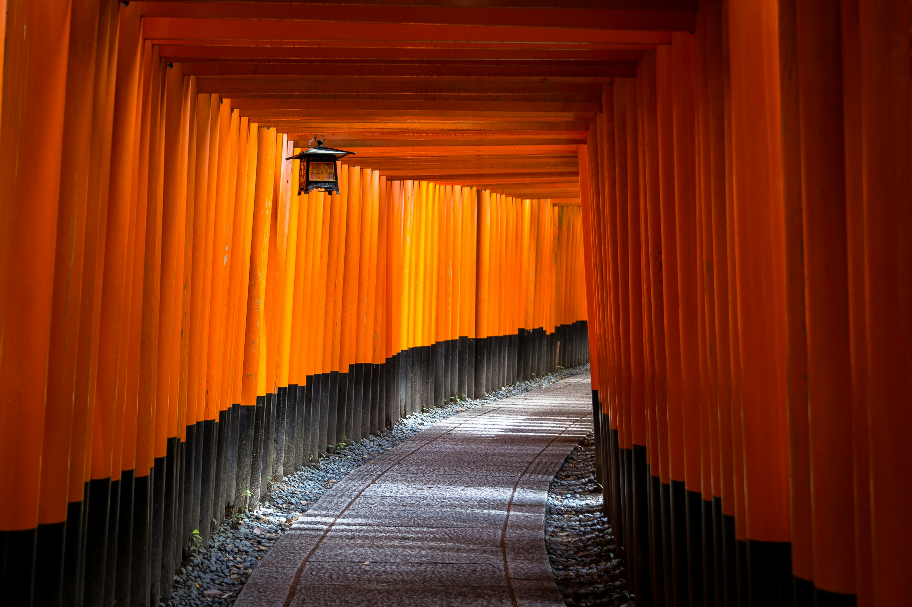

街歩き｜観光ねっと
街歩き｜観光ねっと


SPOT
-

千鳥の神社
神秘的な参道を歩き、鳥居のトンネルに包まれる感動。歴史と信仰が息づく神聖な空間で、心身を清める旅へ。
-

古寺・始まりの庵
古代の風格漂う境内で、静寂なる修行の場へ。歴史の重みと美しさが融合する古刹で、心静かに心を落ち着かせる至福のひとときを。
-

夜桜光彩の道
夜桜の幻想的な輝きに包まれ、幻想的な夜の散策へ。光と影が奏でる美しい調べに、心に花を咲かせる至福の時間を過ごせます。
FOOD


豊かな歴史と魅力的な文化が息づく、心躍る街です。 警官、美食、芸術、自然、そして人々の温かさが、ここでの旅を特別なものにします。 当サイトを通じて、地元の宝物を発見し、新たな体験を楽しんでください。 あなたの旅が、思い出に残る素晴らしい冒険となりますように。